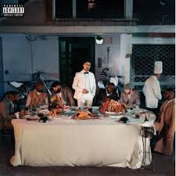

<!DOCTYPE html>
<html lang="fr">
<head>
    <meta charset="UTF-8">
    <meta name="viewport" content="width=device-width, initial-scale=1.0">
    <title>Document</title>
</head>
<body>
    <link rel="stylesheet" href="style.css">
</body>
</html>

<h1>Les derniers salopards</h1>
<H2>Maes</H2>
<p>Le
     17 janvier 2020, Maes publie son deuxième album : Les Derniers Salopards. Il comporte 14 titres dont trois featurings avec Booba, Jul et Ninho, respectivement sur les titres Blanche, Dybala et Distant. Ces trois titres sont certifiés single de diamant. L'album devient quant à lui disque d'or en 11 jours puis platine en un mois. Les Derniers Salopards est le troisième album le plus vendu en France en 2020 toutes catégories confondues, derrière VersuS de Vitaa et Slimane et M.I.L.S 3.0 de Ninho. L'album est certifié triple disque de platine en mai 2021 pour s'être écoulé à plus de 300 000 exemplaires.</p>

<h3>Tracklist</h3>
<ol>
    <li><a href="https://youtu.be/PrqTg3KPTLo?si=sJIEoZGgqpduc18g">Dragovic</a></li>
    <li><a href="https://youtu.be/Vc1qKb3pXwE?si=8DFkcqzVFGEN26my">Street</a></li>
    <li><a href="https://youtu.be/q2mBM0fjzAM?si=Q4WjyeVExefafMpK">Elvira</a></li>
    <li><a href="https://youtu.be/laq2vSWUe8A?si=zQ8i6GWSLZh9c9h4">Mémoire</a></li>
    <li><a href="https://youtu.be/4B1IXVns3UI?si=yHJ8sslFzbKkys6g">Blanche</a> <i>(avec Booba)</i></li>
    <li><a href="https://youtu.be/patueVJsQes?si=-jbTa8Uk67Fe67Mk">Les gens disent</a></li>
    <li>À côté de moi</li>
    <li>Distant <i>(avec Ninho)</i></li>
    <li>Police</li>
    <li>Chromé</li>
    <li>Dybala <i>(avec Jul)</i></li>
    <li>Marco Polo</li>
    <li>Étoile</li>
    <li>Imparfait</li>
    <li>Prioritaire</li>
</ol>